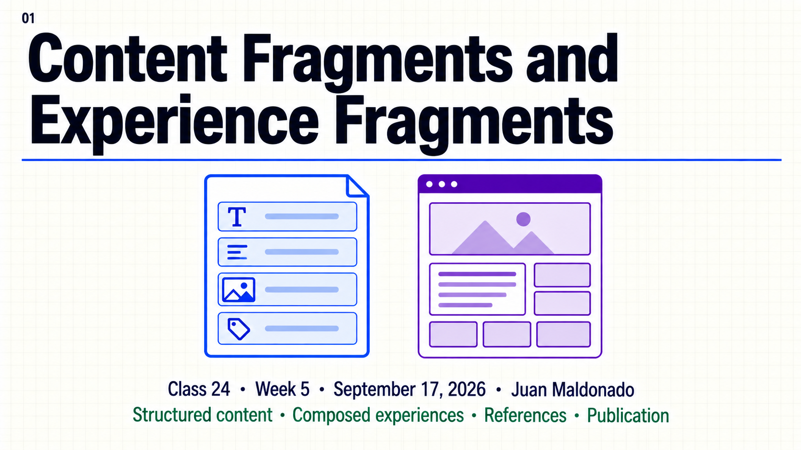
Topic summary
Content Fragments store structured content independently of a page. A model defines their fields, each fragment supplies values, and a Sites component controls which elements and variation are rendered. Experience Fragments preserve a composition of components, content and layout based on an editable template.
Both mechanisms make reuse explicit through references. A source edit can affect several consuming pages, while a copy creates separate content to maintain. A correct Author preview confirms one environment; delivery also depends on the selected fragment, required definitions, assets and cache state on the target.
- Choose fields or a composed experience from the requirement.
- Distinguish a CF model, fragment values and page presentation.
- Select variations deliberately.
- Locate definitions and authored content in the repository.
- Trace the effect of a shared source change.
- Verify the dependencies of published output.
30-minute agenda
| Time | Slides | Focus |
|---|---|---|
| 0–3 | 1–2 | Opening and the unit of reuse. |
| 3–10 | 3–5 | CF model, presentation and variations. |
| 10–18 | 6–8 | XF composition, repository map and references. |
| 18–25 | 9–10 | Publication dependencies and two small Author examples. |
| 25–28 | 11 | Key takeaways. |
| 28–30 | 12 | Questions. |
Complete slide deck
Copy each complete image to PowerPoint or download its PNG. Two simple Author examples follow the deck.
{kind=link}
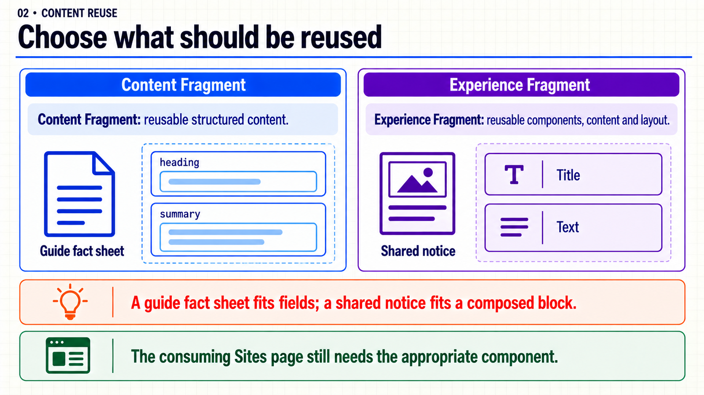
{kind=link}
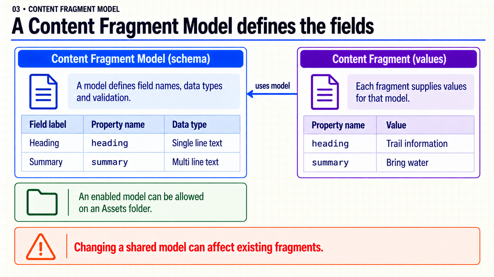
{kind=link}
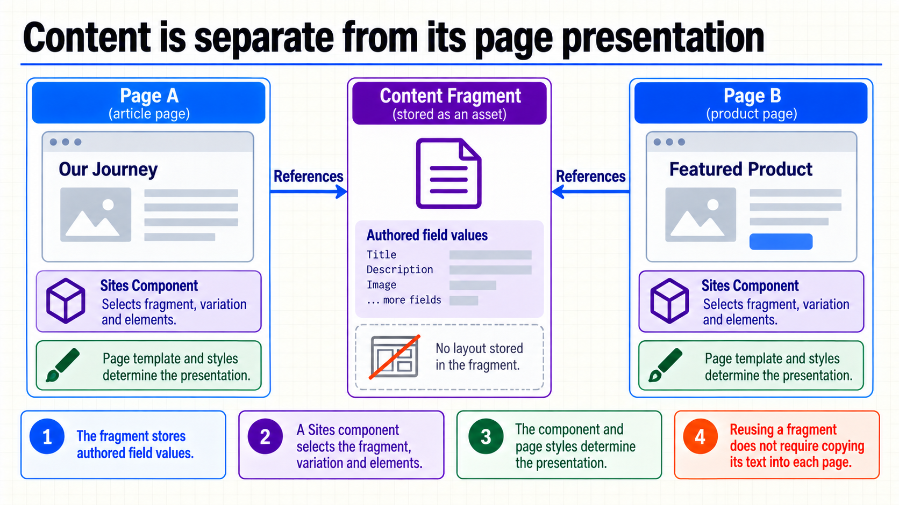
{kind=link}
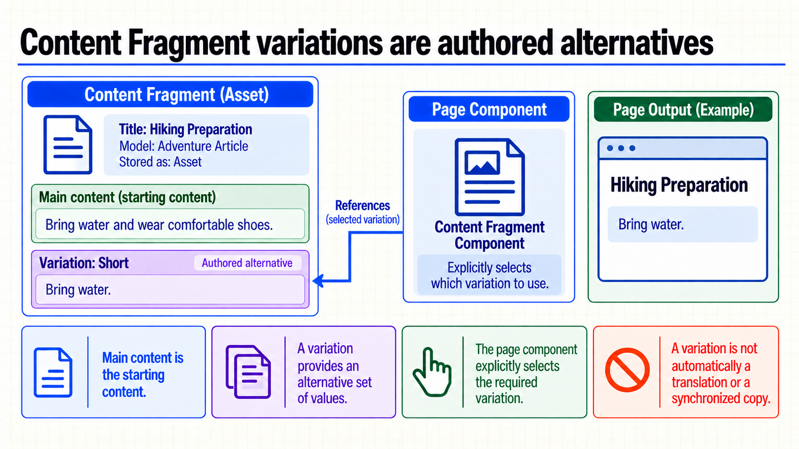
{kind=link}
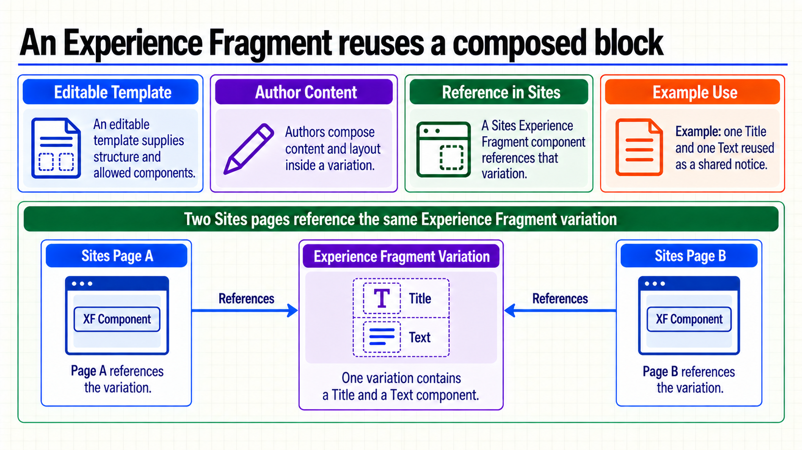
{kind=link}
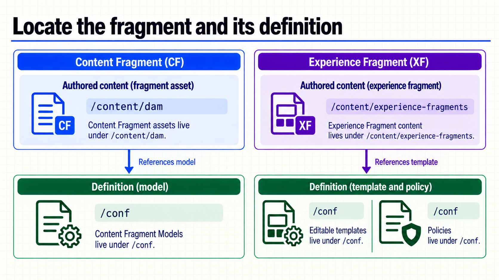
{kind=link}
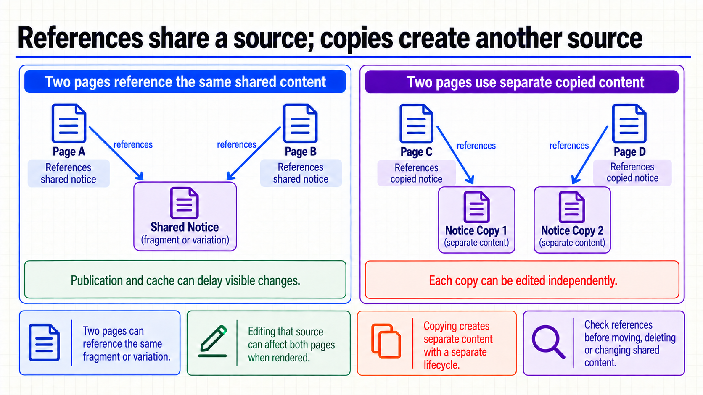
{kind=link}
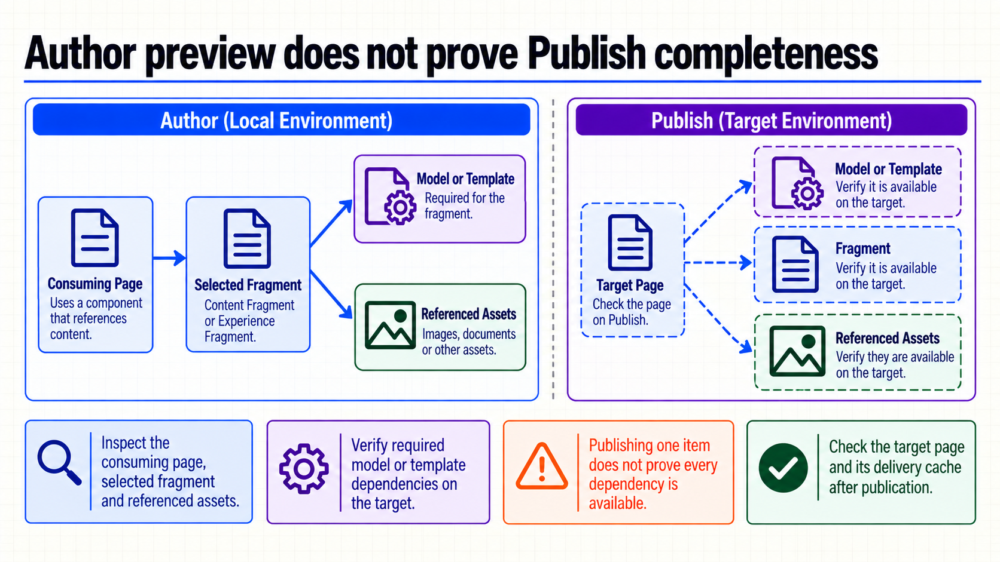
{kind=link}
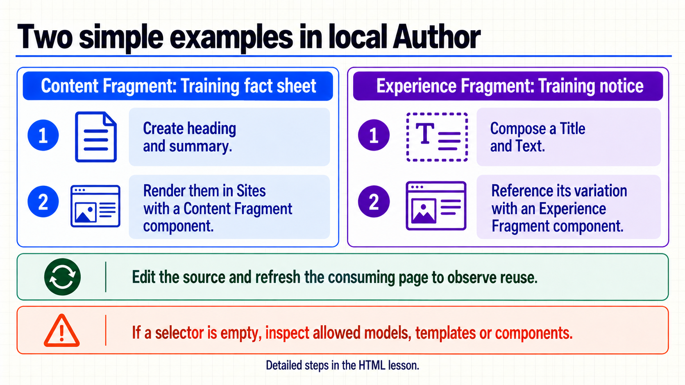
{kind=link}
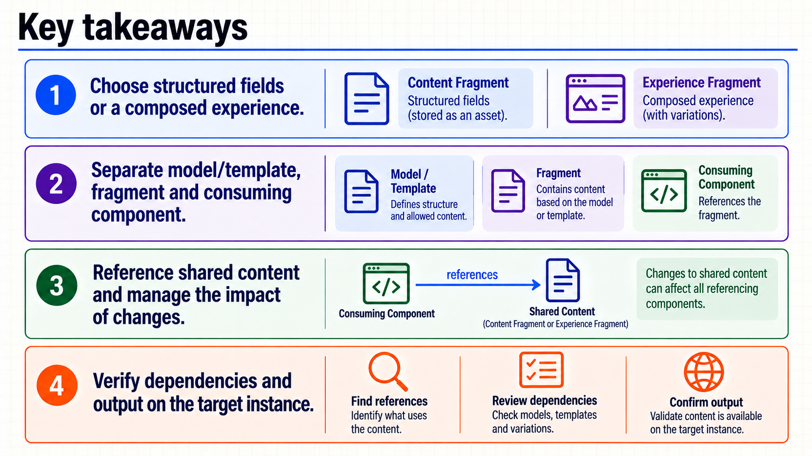
{kind=link}
{kind=link}
Ejemplos simples en Author
Estos ejemplos usan los componentes que ya trae tu proyecto. No requieren clases Java, HTL ni comandos Maven adicionales. Trabaja en Author SDK (http://localhost:4502) con tu baseline WKND Sites o Archetype instalado y una página de prueba editable.
Antes de empezar: comprobar los selectores
En el editor de tu página, abre Insert New Component. Deben aparecer Content Fragment y Experience Fragment, los componentes del proyecto que reutilizan Core Components. El componente Content Fragment List es otro componente; no lo uses para este ejemplo.
Si no aparecen:
- En el menú de información de la página, abre Edit Template, o entra a Tools → General → Templates y selecciona la plantilla de esa página.
- En modo Structure, selecciona el contenedor editable donde vas a insertar el contenido y abre Policy.
- En Allowed Components, permite los componentes Content Fragment y Experience Fragment del proyecto. Conserva las otras selecciones y guarda. Una policy compartida afecta a otras páginas: usa la de tu plantilla de prueba.
- Vuelve al editor de la página y recarga. Si los componentes tampoco existen en el selector de la policy, falta su instalación o sus proxies en el baseline; la policy no instala componentes. Usa el baseline WKND/Archetype completo antes de seguir.
Para el segundo ejemplo también necesitas una plantilla Experience Fragment de tipo web instalada, que permita los componentes Title y Text. Una plantilla normal de página Sites no sustituye a una plantilla XF.
Ejemplo 1 · Una ficha con dos campos
Qué verás: el texto de un Content Fragment dentro de una página Sites. Los nombres y valores siguientes son sólo contenido de ejemplo.
A. Habilitar la configuración y crear el modelo
- Abre Tools → General → Configuration Browser → Create. Pon título
Training fragments, nombretraining-fragmentsy activa Content Fragment Models. Guarda. Si ya existe esta configuración del ejemplo, úsala; no crees otra. - En Tools → General → Content Fragment Models, entra a esa configuración y pulsa Create. Título:
Training fact sheet. Crea el modelo y ábrelo para editar. - Añade estos dos campos, comprobando especialmente Property Name:
| Tipo | Field Label | Property Name | Configuración |
|---|---|---|---|
| Single line text | Heading | heading |
Required activado |
| Multi line text | Summary | summary |
Default Type: Plain Text |
- Guarda el modelo. En su consola, selecciónalo y pulsa Enable si todavía no está habilitado.
- En Assets → Files, crea una carpeta propia llamada
training-fragments. Selecciónala y abre Properties → Cloud Services. En Cloud Configuration, selecciona/conf/training-fragmentsy guarda. - En Properties → Policies de esa carpeta, permite
Training fact sheetmediante Allowed Content Fragment Models by Path, usando el picker. Si la política viene heredada, desactiva esa herencia únicamente en esta carpeta de ejemplo antes de seleccionar el modelo. Guarda.
La configuración vincula la carpeta con sus definiciones; la política controla los modelos permitidos. Configuration Browser y modelos y políticas.
B. Crear la ficha y verla en la página
- Dentro de la carpeta Assets anterior, pulsa Create → Content Fragment, selecciona
Training fact sheety continúa. Usa títuloTrail informationy nombretrail-information. - Abre el fragmento. En su contenido principal escribe Heading:
Trail informationy Summary:Bring water and wear comfortable shoes.. Guarda con Save o Save & Close, según tu editor. - Abre tu página de prueba en Sites. Inserta Content Fragment y abre Configure.
- En Content Fragment, selecciona con el picker el fragmento que acabas de crear. Usa Display Mode → Multiple Elements y selecciona
headingysummary. En Variation, conserva el contenido principal: según la versión, puede aparecer como Master o Main. Confirma el diálogo. - En Preview, comprueba que aparecen los dos valores. El componente puede mostrarlos como campos, sin convertir
headingen un encabezado visual: el nombre del campo no decide el HTML ni la tipografía. - Vuelve al editor del fragmento, cambia Summary a
Bring water.y guarda. Regresa a la página y recarga su preview: el componente debe leer el nuevo valor de la misma fuente.
Si quieres ver el efecto en dos lugares, referencia ese mismo fragmento desde una segunda página de prueba; no copies su texto dentro de un componente Text. Crear y editar fragmentos y usarlos en páginas.
Ejemplo 2 · Un aviso con título y texto
Qué verás: dos componentes compuestos en un Experience Fragment y reutilizados desde una página.
- En la navegación principal, abre Experience Fragments. Dentro de la carpeta del proyecto, crea una subcarpeta
training-fragmentspara este ejemplo. - Selecciona la carpeta y abre Properties → Allowed Templates. Conserva la selección heredada si ya permite la plantilla XF web de tu proyecto. Si el selector de creación está vacío, añade la ruta real de esa plantilla instalada y habilitada, obtenida en Tools → General → Templates, a Allowed Templates de esta carpeta. Este campo acepta patrones; una ruta exacta de tu plantilla evita permitir todas las plantillas. Guarda.
- Dentro de la carpeta, pulsa Create → Experience Fragment. Elige la plantilla XF web disponible, título
Training noticey nombretraining-notice. Crea y abre el fragmento. - En su variación inicial, agrega Title con texto
Before you goy Text conBring water.. Confirma ambos diálogos. Si tu plantilla ya incluye esos componentes, edítalos en lugar de añadir duplicados. Si no están permitidos, revisa la policy del contenedor de esa plantilla XF, siguiendo el procedimiento anterior para Title y Text. - Abre tu página de prueba Sites e inserta Experience Fragment. En Configure → Experience Fragment variation, elige con el picker la variación que acabas de editar, normalmente
master. Selecciona la variación, no la carpeta ni sólo el contenedor raíz del fragmento. Confirma. - Abre Preview. Debes ver el título y el texto compuestos. Vuelve a esa variación XF, cambia el Text a
Bring water and a hat.y confirma. Recarga la página consumidora para observar el cambio.
No es necesario crear una segunda variación, configurar MSM ni publicar para observar esta referencia en Author. Crear Experience Fragments y configurar su componente.
Si algo no aparece
| Síntoma | Comprobación concreta |
|---|---|
| Falta Create en Content Fragment Models. | Configuration Browser: Content Fragment Models habilitado y permisos de edición. |
| El modelo no aparece al crear el fragmento. | Estado Enable, Cloud Configuration y Policies de la carpeta Assets. |
| El componente no aparece en la página. | Instalación del componente y Allowed Components del contenedor de esa plantilla. |
| No hay plantilla para crear el XF. | Plantilla XF web instalada/habilitada y Allowed Templates de la carpeta XF. |
| El componente XF queda vacío. | Selección de una variación existente con contenido; permisos y template/policy del XF. |
| Cambiaste contenido, pero la página sigue igual. | Guardado, fuente y variación seleccionadas, instancia que estás mirando y caché. |
Alcance de la comprobación: las instrucciones se contrastaron con documentación oficial; no se ejecutaron en tu SDK. Los dos ejemplos son de autoría/configuración y no incluyen código nuevo que compilar. Si sólo tienes Author, observar el resultado allí no confirma su publicación.